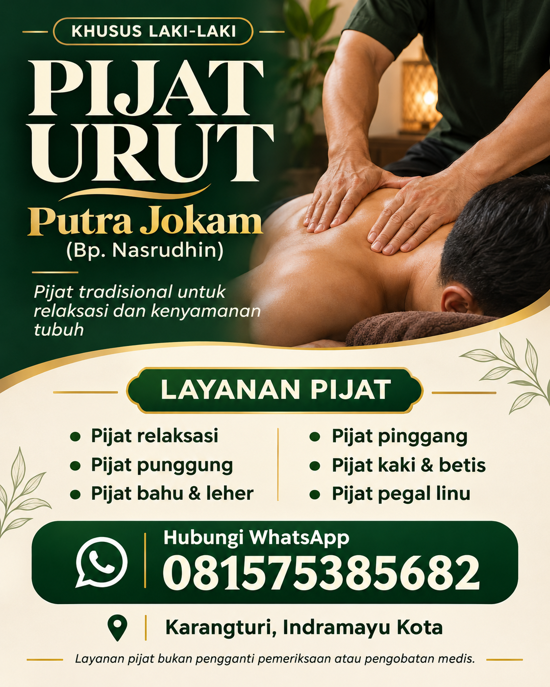

Pijat relaksasi
Waktu untuk bersantai dan beristirahat dari rutinitas harian.
Tanyakan layananKARANGTURI · INDRAMAYU
Pijat urut tradisional bersama Bp. Nasrudhin untuk relaksasi dan kenyamanan tubuh setelah beraktivitas.
Khusus laki-laki • Jadwal dikonfirmasi melalui chat

PIJAT TRADISIONAL • PUTRA JOKAMLAYANAN KAMI
Pilih area pijat yang Anda butuhkan. Ceritakan kondisi tubuh Anda kepada Bp. Nasrudhin sebelum memulai sesi.
Waktu untuk bersantai dan beristirahat dari rutinitas harian.
Tanyakan layananPijatan pada area punggung dengan tekanan yang dikomunikasikan bersama.
Tanyakan layananFokus pijatan pada area bahu dan leher sesuai kenyamanan Anda.
Tanyakan layananKonsultasikan kebutuhan pijat pada area pinggang sebelum sesi dimulai.
Tanyakan layananPijatan yang berfokus pada kaki dan betis setelah beraktivitas.
Tanyakan layananSampaikan area yang terasa pegal untuk mendiskusikan kesesuaian layanan.
Tanyakan layananLayanan pijat bukan pengganti pemeriksaan atau pengobatan medis. Jika mengalami cedera atau memiliki kondisi medis tertentu, konsultasikan dengan tenaga kesehatan terlebih dahulu.
MUDAH, LANGSUNG LEWAT CHAT
Tidak perlu daftar akun. Tanyakan layanan dan waktu kunjungan langsung kepada Bp. Nasrudhin.
Mulai chat WhatsAppPesan pembuka sudah disiapkan. Anda bisa mengubahnya sebelum mengirim.
Sebutkan layanan yang diinginkan dan rencana waktu kunjungan.
Pastikan jadwal dan petunjuk lokasi sudah dikonfirmasi sebelum berangkat.
TEMUI KAMI
Karangturi, Indramayu Kota
Buka lokasi tempat pijat melalui Google Maps. Hubungi Bp. Nasrudhin jika memerlukan petunjuk tambahan sebelum berkunjung.
Klik tombol di atas untuk membuka lokasi yang dibagikan oleh pemilik usaha.
Lokasi di Google Maps terdaftar dengan nama “Pijat Totok saraf dan refleksi”. Jika peta tidak tampil, gunakan tombol Buka lokasi di Google Maps.
SEBELUM BERKUNJUNG
Tidak. Cukup klik tombol WhatsApp dan kirim pesan kepada Bp. Nasrudhin.
Ya, layanan Pijat Urut Putra Jokam khusus untuk pelanggan laki-laki.
Silakan tanyakan langsung melalui WhatsApp agar mendapatkan informasi biaya dan jadwal yang tersedia.
Sebaiknya hubungi Bp. Nasrudhin terlebih dahulu untuk memastikan ketersediaan jadwal dan titik lokasi.